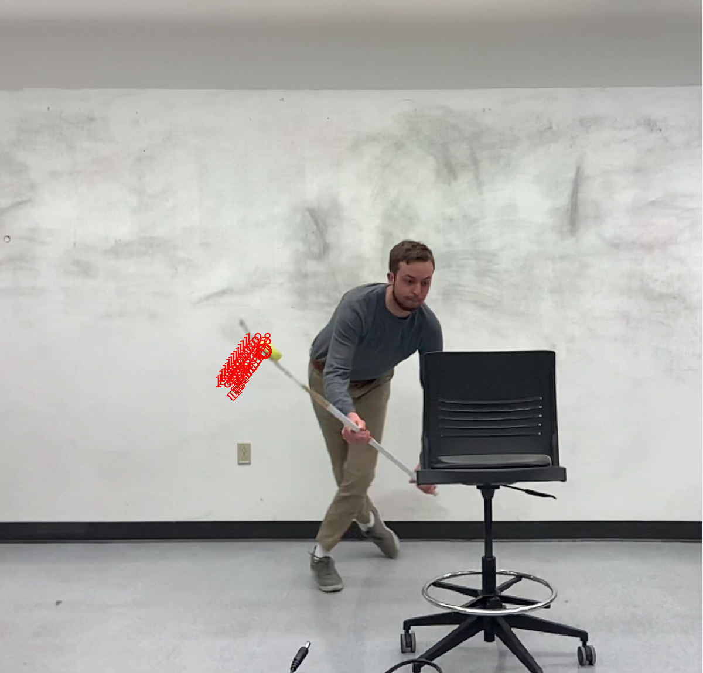
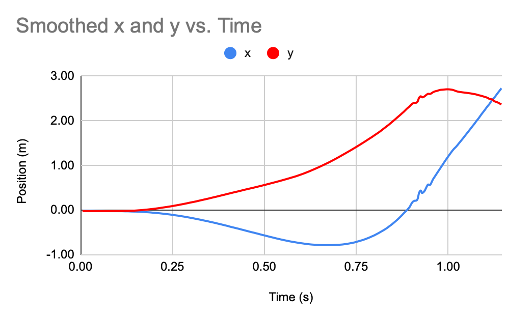
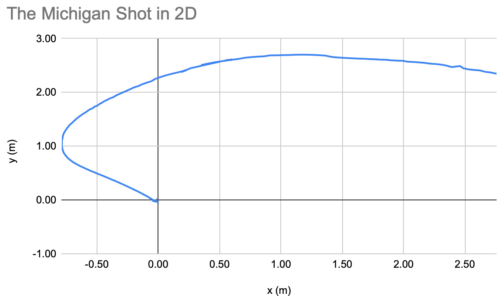
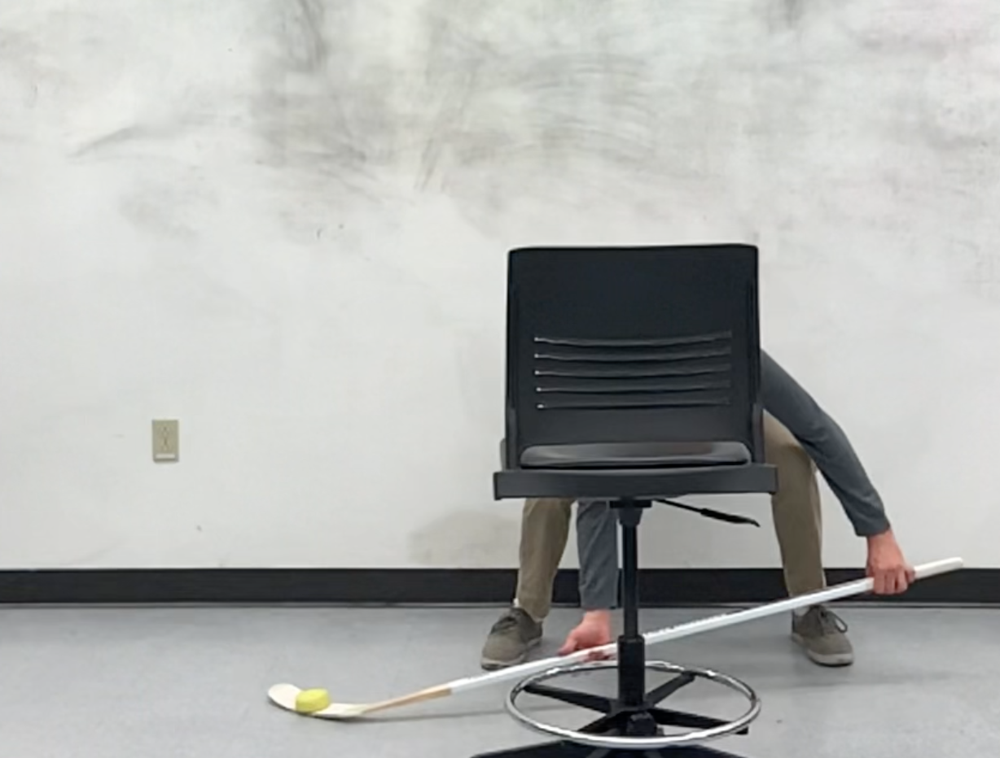
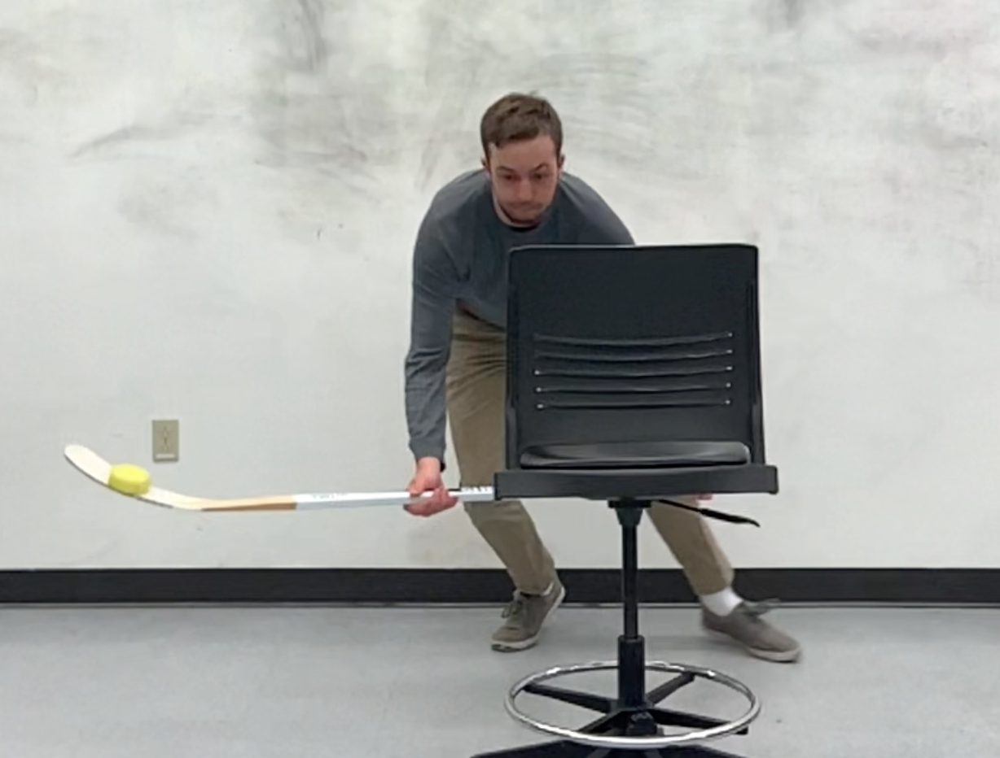
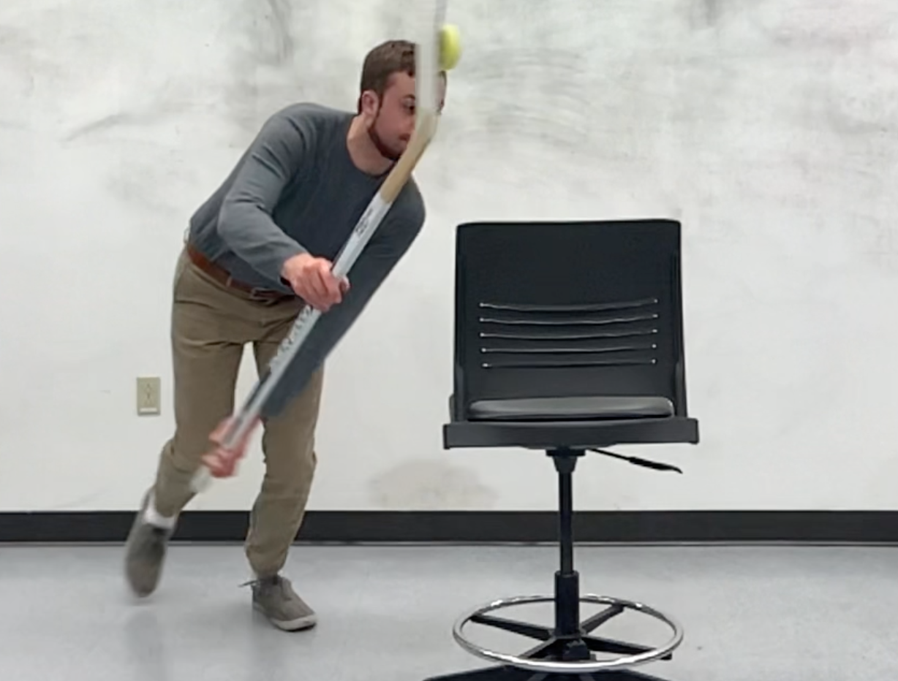

Physics of the Michigan
Introduction to the Michigan
Named for its first performance by Mike Legg at the University of Michigan in 1966, the Michigan shot resembles a move from lacross more than hockey. After balancing the puck flat on the shooter's stick plate, the player lifts their stick up and curves it towards the goal, dumping it into the goal off the goalie's shoulder.
The Michigan needs to be seen to be fully understood though. Here's Mike Legg trying the move out for the first time:
Only in recent years has the move caught on across the NHL. After Andrei Svechnikov's initial Michigan goal in 2019, only 3 other players have been able to replicate the move. Schenikov has since done it again but has been beat out by Anaheim's Trevor Zegras, who's successfully pulled it off 3 times (though only counting in a game once), plus 2 more times when he's used the technique to perform a pass.
Experimental Setup
To analyze the physics of what's going on, I deemed it necessary to capture my own data by performing the shot myself. As an amateur hockey player, this took some practice but I eventually was able to do it well enough that the motion was largely replicable. I then set up a camera and recorded myself performing the shot. I used a chair as a mock goal post around which to wrap the puck.

Materials
- Hockey stick
- Hockey tape (optional)
- Puck
- Tripod
- Camera
Analysis Tools
After collecting my data, I analyzed it using two principle software tools.
First, I analyzed the videos in the freely available Tracker program from Physlets. Tracker allows the user to define several important variables to ensure accurate data.
- Axes: 0° from horizontal with the origin centered at the puck in the first frame
- Frame Rate: 240.07 fps
- Calibration Stick: 0.43 m along the backrest of the chair
- Puck Mass: 53.7 g (0.0537 kg)
Tracker screenshot with axes and calibration stick
Tracker's main utility lies in its auto-tracking feature. Given a defined template of an object and a range for where it may appear in the next frame, Tracker can automatically follow the object frame by frame and mark its position while also recording/calculating data on numerous other variables, such as acceleration, velocity, and path length.
Tracker screenshot demonstrating autotracking capabilities by frame
Google Sheets was the other tool that was also used. Sheets allows for web-based spreadsheet computing and was used to produce all graphs on this page.
Initial Analysis
From Tracker, I exported data for x, y, velocity, and time. Plotting position in x and y against a time-axis shows us the relative motion of the stick in each direction over the course of the shot.
Evidentally the puck rises smoothly in as it moves backwards than hooks around towards the net in x. Plotting x and y against each other gives a view of the Michigan shot in two dimensions.
Modeling Frictional Force
The underlying phenomena that makes the Michigan possible is the existence of static friction and centripetal acceleration. Just as, with enough speed, one can swing a bucket of water over their head without getting wet, a hockey player can keep the puck on their stick even at an angle where a stationary puck would be expected to fall.
The first force keeping the puck up is the aforementioned static friction. In a frictionless environment (such as the ice hockey is often played on), the puck would be expected to slide off the stick at any sort of angle from the horizontal. Yet this is not the case, even when stationary. Evidently, some sort of force must be keeping the puck up with a magnitude equal to the gravitational force pulling it down. It can be shown experimentally that the material of the tilted surface directly affects the angle of slippage via the coeffieicnt of friction.

However, this model actually simplifies things a bit too much for a hockey stick. The curve of the blade means that the puck experiences gravitational force in two directions. If the above image is modeled along the xy-plane, one must also account for the z-axis in which the diagram is tilted out of or into the page.
When lying flat on the stick, the natural curve of the stick's blade leads to the surface itself being titled by 7° along the z-axis. With the natural materials of the stick, the blade can then be tilted 33° in the xy-plane before slippage begins to occur. However, if hockey tape is added to the stick, the surface on which the puck sits now has a higher coefficient of friction and does not slip until 37° of tilting. This is particularly useful for the Michigan, which relies on the puck being pinned in place despite downward gravitational force.
Note that many hockey players tape their sticks in different ways. Here I have used a standard heel-to-toe tape style to maximize friction. I have also modeled the surface the puck rests on as a flat surface since it largely is and the curve of the blade only comes into play when the puck is moving along the blade, which it is not for this shot. (For a good example of when it does, see the toe drag).

A stick being taped to increase the coefficient of friction
Modeling Centripetal (Normal) Force
The other force holding the puck in place, particularly when it moves, is the centripetal force that results from centripetal acceleration. As the puck accelerates through space along a curve, it experiences a force that pins it to the stick blade.
Centripetal force of course comes from the curved acceleration of an object. Accelerating a water bucket in a straight line above your heard won't do anything to keep you from getting wet.
Though an object may appear to accelerate along a curve, at any given instant in time, the acceleration is linear and straightforward; it is merely having its direction changed continuously (this is why it is an acceleration, even if speed is kept constant). To see this in action, swing a cord with a mass of some sort tied to the end in a circle. If you let go, the mass will not continue to curve but will instead fly off in a straight line at the moment of release.
This linear acceleration can be modeled as having two components that are perpindicular to one another, one of which points inwards, towards the center of rotation. This is necessary since the total acceleration and tangential acceleration are not aligned – there must therefore be another vector component connecting them.

However, this model of centripetal force presumes a perfectly curvilinear path, which we have already seen is not the case. Instead, it is best to think of this force as coming from the normal force, the result of the equal and opposite reaction prescribed by Newton's Third Law.
Every object always feels a gravitational acceleration but when placed on a flat surface, objects are capable of being at rest. The reason is that the equal and opposite normal force is pushing up on the object just as much as gravity is pushing down; thus the net force is zero.
Motion Analysis
Thus far I have only abstractly explained the forces holding the puck throughout the motion of the Michigan shot. Let us now calculate their values with real data. To do this, it is helpful to break down the motion of the shot into three distinct moments: the start of the shot, the maximum extension in x (the widest part of the shot - midway up), and the end of the shot where the puck comes off the stick blade.
Start of the Shot
At the beginning of the shot, the puck is at rest on the stick. This means that any and all forces acting on it must necessarily have a counter-force that is equal and opposite to it. We can use this fact to explore the primary two forces that are acting on it: the normal and gravitational forces. Since the puck is at an angle, we can break these down into component forces. To do this, it helps to consider two sets of coordinate axes: the regular axes where x is along the ground and y is horizontal, and the puck's axes where x is along the stick blade. That is, the regular coordinate system but titled at such an angle to make the puck long along the x-axis. I will denote this as x' and y' in constrast to the original x and y.
In this new coordinate system, the normal force points directly up at a perpindicular angle to the blade which here is the x-axis. (the "normal" angle). Gravitational force of course points towards the ground on the original y-axis but since the puck is at an angle, we can model this as being partly perpindicular to the puck and partly parallel to it - i.e. as having components in x' and y'. Since the puck is of course not flying off the stick, we know that the gravitational force in y' must be equal and opposite the normal force, which is only in y'. Thus,

But what of the gravitational force along x'? There must be some force that is equal and opposite to it: the friction force. Since the puck can be angled to feel more gravitational force along x' and the frictional force will still hold it in place, we can use an inequality to descibe it:
However, if we know the angle of the puck that causes it to slip, we know this is our maximum frictional force and can equate the two to solve for the coefficient of friction:
Maximum Extension
As the skater wraps around the goal post (or chair), they push the stick out and around along the x-axis before bringing it back in for the shot release. The maximum point of extension in x provides a unique analysis point because it is a moment in which the x-velocity is going from negative to positive, and thus momentarily crosses 0. In fact, all the forces in x must also be (approximately) zero (there may be small perturbations or drag forces but these can be safely neglected). The net force is thus:

Separation
Lastly, as the stick approaches a vertical orientation (relative to the ground), the puck is held in place briefly before separating and continuing on its trajectory without the driving force of the stick. Thus, while it may be feeling force in the negative x-direction from drag, the only external force independent of its motion is gravity. Since the puck is now falling, the frictional force must be lesser in magnitude than the gravitational force:

Modeling
These moments of the motion of the Michigan shot collectively tell a story of how the shot works - not just in terms of game mechanics but in terms of basic Physics principles. These moments of motion are captured in the free body diagrams below.
Together, they model the forces of the Michigan shot over time and have accomplished our goal!